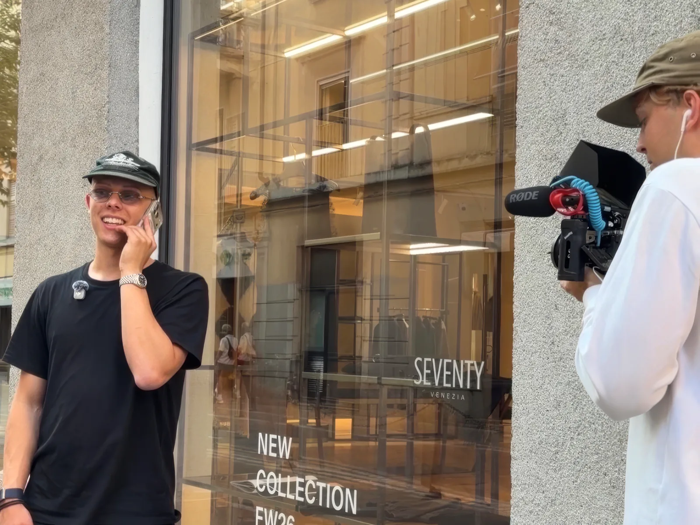

← All projects
02 / 05
EP.01Betting Everything on Popcorn
- Type
- YouTube episode
- Client
- Mr. Popcorn
- Location
- Milan, Italy
- Year
- 2026
- Runtime
- 11:00
Mr. Popcorn came to Ruben with an idea for a YouTube series. Episode one goes to Italy to look at the machine that could start his popcorn company. Ruben filmed and edited it in Milan, and calls it his favourite work yet.





Watch & view